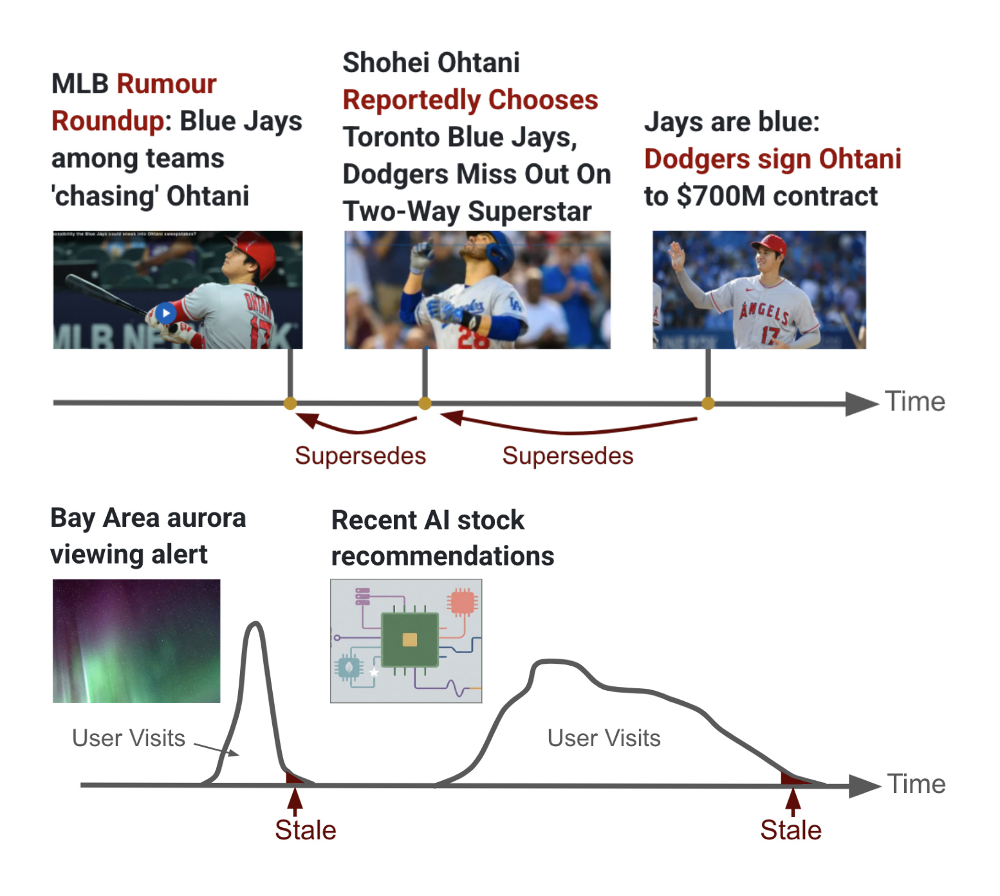
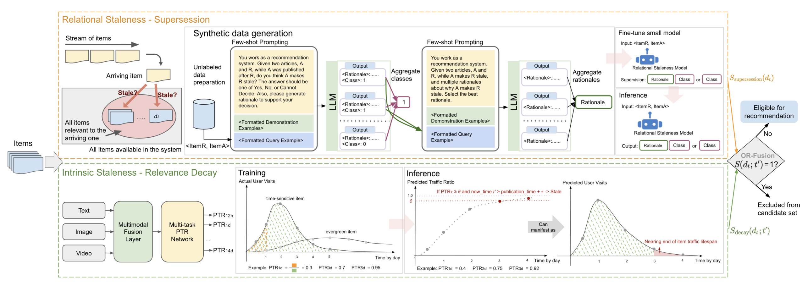
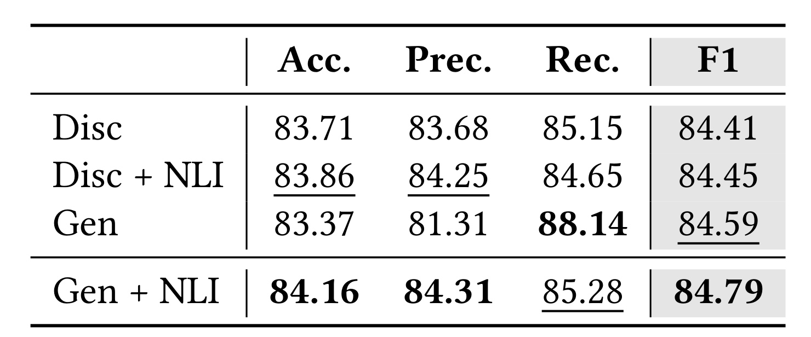
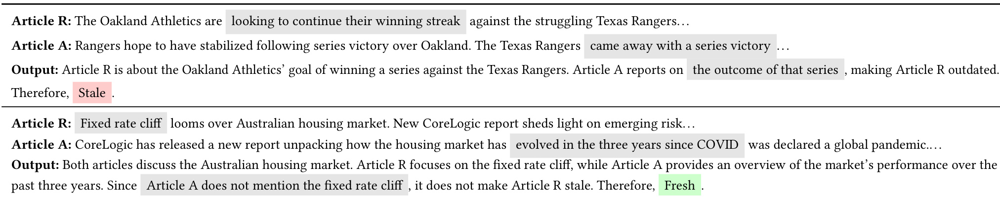
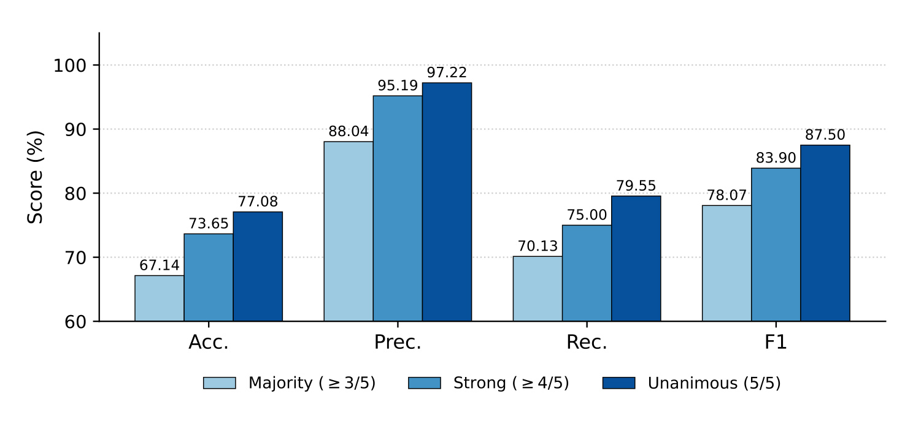
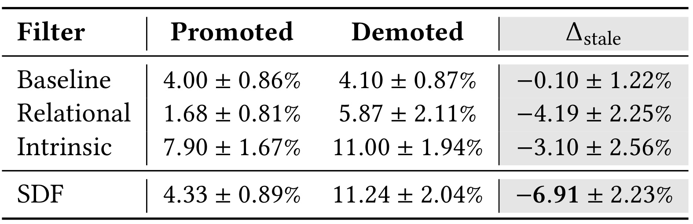
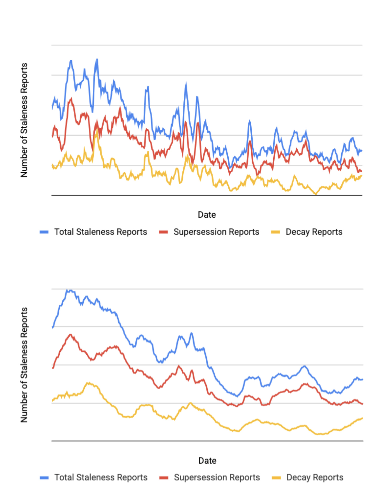

Decomposing Staleness in Recommender Systems: A Dual-Filter Framework for Supersession and Decay
这篇论文研究大规模推荐系统中的内容陈旧问题，中文可译为《分解推荐系统中的陈旧性：面向事实替代与相关性衰减的双过滤框架》。作者 Di Bai、Feng Han、Zhenwei Tang、Jintao Liu、Luoshu Wang、Jialu Liu 均来自 Google，工作发表于 CIKM 2026 Applied Research Track，2026 年 8 月 16 日公开。论文提出 SDF（Supersession-Decay Filtering），并报告它已完整部署到 Google Discover。论文入口见 arXiv:2608.15780；本轮未核验到公开代码，论文只给出了 CIKM DOI。
陈旧内容可能因为后续事实已推进而突然失效，也可能因自身生命周期耗尽而自然衰减；固定年龄阈值不能识别这两种机制，而依赖互动下降的策略只有在用户已经反复看到过时内容之后才会反应。
1. 背景和问题
1.1 为什么“新鲜度”不能只由发布时间表示
推荐系统通常把时间作为排序特征：越新的内容得到更高权重，越旧的内容逐渐降权。这种做法能表达一般性的 recency 偏好，却没有回答一个更严格的问题：某条内容是否已经失去继续进入候选集的资格。降权和过滤的系统含义不同。降权仍允许一个已经错误、被取代或错过事件窗口的条目消耗召回、特征计算和 dense scoring 资源；只有它的其他分数也足够差时，用户才可能不再看到它。SDF 把问题前移到排序之前：先判断候选是否“根本不应继续服务”，再让下游排序器处理剩余内容。
年龄阈值是最直接的过滤方法，但它把内容寿命压成一个全局或分类型常数。阈值设得长，突发新闻可能已经被更新事实取代数小时，仍留在候选池；阈值设得短，常青解释、长期活动信息和持续有用的指南又会被误删。基于点击率、互动量或曝光后的 engagement cliff 也有结构性滞后：系统必须先持续曝光，观察到用户不再点击或开始负反馈，才能学习到条目已陈旧。也就是说，这类信号并非免费获得，而是以真实用户的劣化体验换来反馈。
论文的重要判断是：陈旧性并不是单一时间函数，它至少来自两种不同的信息机制。第一种是 supersession（事实替代）。旧条目本身可能刚发布不久，但一个后到条目改变了同一主题的状态，使旧叙述立刻不再适合作为当前信息。例如“某球员仍在考虑多支球队”会在正式签约消息发布的那一刻被取代。第二种是 relevance decay（相关性衰减）。某条内容没有被任何新内容反驳或更新，却随着预定事件结束、需求窗口过去或自然注意力衰退而失去价值。前者依赖条目之间的关系，后者主要是条目自身内容和生命周期的属性；把两者混在一个年龄规则里，模型就很难知道应该比较“谁更新了事实”，还是预测“这条内容还能活多久”。
1.2 两种机制不是两个年龄段，而是两种关系结构

Figure 1 上半部说明 supersession 不是“较老内容自然变差”，而是一条新闻链中的状态迁移：传闻、错误的去向报道、正式签约消息依次到达，后一个节点改写了前一个节点的有效性。判断时必须同时看既有条目和后到条目，并确认二者指向同一核心事件且后者确实推进了事实。下半部则画出两种不同长度的访问曲线：短时事件可能迅速达到访问峰值并在当天衰减，较慢内容可能维持更长尾部。此时不存在必要的“替代者”，只能从内容推断访问生命周期。图中两个面板共同解释了 SDF 为何采用两个模型，而不是给一个 freshness score 增加更多时间特征。
这一分解还定义了论文的任务边界。SDF 处理的是 item-level 陈旧性：条目是否被新事实取代，或是否已经接近自身有效生命周期末端。它不直接建模某个用户是否已经看过内容，也不把个性化疲劳等同于陈旧。论文后面的生产错误分析表明，相当一部分剩余用户投诉其实来自“用户此前在 Discover 或其他地方见过”，这种感知需要曝光历史或用户状态，不属于本文两个过滤器的输入。
1.3 工业目标：主动过滤，同时守住 engagement
Google Discover 面向开放网页内容，论文称其规模达到每日数亿、每月数十亿活跃用户。这个场景中，每天有数百万新条目需要评估，关系比较可能产生更大的 pairwise 计算量，而且过滤过度会减少候选多样性、损伤互动。因而 SDF 的目标不是最大化“过滤掉多少内容”，而是在互动基本中性的约束下，把明确陈旧的条目从计算昂贵的排序链路之前移除。
这也决定了证据应分三层阅读：离线实验检验两个模型本身能否识别陈旧；随机化在线 A/B 和 joint-holdback 检验过滤是否使实验臂的内容更少陈旧、用户指标是否改善；两年部署曲线观察持续升级和多地区扩张后的长期趋势。三者互补但不能互换。尤其是论文最醒目的 54.9%，含义是相对部署窗口起点的用户上报陈旧内容数量下降，不是推荐准确率提升 54.9%，也不是单次随机化实验的处理效应。
2. 方法
2.1 两类陈旧任务与 OR 融合
论文令 $d$ 表示 Discover 中的一个条目，$R(d)$ 表示与它共享主要主题的条目集合，$A$ 表示提供给下游排序器的候选集合。关系陈旧检测首先学习一个二元成对判断器：
符号解释：式（1）中，$d$ 是已经存在的条目，$d'$ 是后到且与 $d$ 主题相关的条目，$f$ 是关系分类器；输出 1 表示 $d'$ 已使 $d$ 陈旧，输出 0 表示没有形成替代关系。这里的顺序不可交换：任务不是一般语义相似度，而是“新内容是否使旧内容失效”的有向判断。与之相对，内在衰减检测不比较条目对，而是学习内容到生命周期比例的映射：
符号解释：式（2）中，$d_t$ 表示在时刻 $t$ 到达系统的条目，$\tau$ 是从到达时刻向前看的时间跨度，$g$ 是 PTR 模型，输出区间 $[0,1]$ 表示预计到 $t+\tau$ 为止已经累计的生命周期访问比例。数值越接近 1，意味着未来继续获得有效访问的空间越小；它不是点击率，也不直接表示内容质量。对 supersession，论文把“至少有一个后到同主题条目构成替代”写成：
符号解释：式（3）中，$R_{>t}(d_t)$ 是与 $d_t$ 同主题且在 $t$ 之后到达的条目集合；$\exists$ 表示存在至少一个条目；$\mathbf{1}[\cdot]$ 是条件成立取 1、否则取 0 的指示函数；$S_{\mathrm{supersession}}$ 是最终关系陈旧标签。这个定义采用“存在即触发”，因为一条可靠的新事实足以使旧叙述退出候选集。对 decay，理想化的连续时间判定为：
符号解释：式（4）中，$t'$ 是实际做过滤决策的时刻，$\tau=t'-t$ 是条目已经历的年龄，$\theta$ 是生命周期累计比例阈值，$S_{\mathrm{decay}}$ 是内在衰减标签。当预测比例达到阈值时，系统认为条目大部分有效流量已经发生，继续服务的边际价值较低。两个标签最终以逻辑析取组合：
符号解释：式（5）中，$\lor$ 是 OR；$S$ 是联合陈旧标签，$A$ 是候选集合。$S=1$ 时条目从 $A$ 删除，$S=0$ 时仍有资格交给下游推荐。OR 融合表达了论文的核心系统选择：两个过滤器负责互补的失败机制，任何一个给出明确陈旧判断都足以取消候选资格。 它也意味着单个过滤器的误报会直接影响候选覆盖，因此阈值必须在 engagement 约束下调节。

Figure 2 把训练和服务链路放在同一张图里。上支路从不断到达的条目构造成对样本，LLM 先生成类别与理由，经类别投票和理由投票得到监督，再微调小型关系模型；下支路把文本、图片、视频送入共享多模态编码器，一次输出多个时间跨度的 PTR。两个模型不在用户请求路径上实时推断，而是周期性更新标签；服务时只按请求时间读取缓存，并通过右侧 OR 菱形决定“可推荐”或“从候选集中排除”。图中的橙色与绿色虚线框还揭示了两条支路不同的触发条件：关系分支必须等新条目到达并与旧条目组成 pair，PTR 分支则能在单条内容入库后依据内容预先预测多个 horizon。右侧 $S_{\mathrm{supersession}}(d_t)$ 一旦被后续事实触发便可固定缓存，而 $S_{\mathrm{decay}}(d_t;t')$ 会随决策时刻跨过新的 horizon 才改变。这个区别解释了为什么服务端既要查两类标签，又只需执行轻量的时间判断与 OR，而无须同步运行两个模型。因此该图不仅是模型图，也是 SDF 能在工业规模节省排序计算的系统位置说明。
2.2 关系陈旧：从成对采样到理由蒸馏
关系过滤器最难的部分不是定义二分类，而是得到有信息量的训练对。相似度太高的条目往往近乎重复，它们可能描述等价事实，并不一定存在谁替代谁；相似度太低的条目彼此无关，负例虽容易却没有训练价值。真正的正例集中在中等相似区间：两条内容谈同一事件，但新条目推进了状态。热门主题又会生成大量相似条目，如果直接两两组合，训练集会被少数热点和低边际价值 pair 淹没。
Algorithm 1 因而先对条目集合 $D$ 聚类，从每个簇 $c$ 按规模选取 $k\propto|c|$ 个多样化代表，得到代表集合 $I$；随后只在不同簇的代表之间生成 pair，计算相似度 $\sigma$，再用区间到权重的映射 $M$ 对候选 pair 加权抽样。跨簇限制减少近重复，权重表则对最可能包含 supersession 正例的相似度区间过采样。这个过程不是用相似度直接下陈旧结论，而是把昂贵的 LLM 标注预算集中在最模糊、最有价值的区域。
对每个未标注 pair，PaLM 2-L 教师接收 $K$ 个 few-shot 示例；每个示例包含旧条目、新条目、类别 $s_j$ 和理由 $e_j$。教师对目标 pair 独立采样 7 次，先对类别做多数投票，再让第二次 LLM 调用只在胜出类别对应的候选理由中选择最佳解释。两阶段设计承认“类别正确但理由错误”这一可能：理由不是装饰，因为后续学生会直接学习它。如果先把错误理由和正确类别一起蒸馏，学生可能学到不可靠的证据链。
学生采用公开的 11B T5 checkpoint。输入是固定任务前缀加 $\langle d,d'\rangle$，训练目标可以只生成类别（Disc），也可以按“理由，然后类别”的形式生成（Gen）。此外，作者加入 NLI 辅助训练，因为 premise-hypothesis 关系判断与“新条目是否使旧条目失效”具有相似的成对结构。NLI 的价值不在提供 Discover 陈旧事实，而在拓宽 pair-comparison 的人工标注分布，缓解合成数据受采样策略与教师能力限制的问题。训练时理由来自教师监督；论文没有声称线上学生自己涌现了新的 chain-of-thought。
2.3 内在陈旧：用 PTR 预测生命周期
对于没有明显替代者的条目，SDF 用访问分布刻画生命周期。概念上的 PTR 目标是：
符号解释：式（6）中，$\mathrm{PTR}_{\tau}(d_t)$ 是条目 $d_t$ 在跨度 $\tau$ 的累计流量比例；$\#$ 表示访问计数；分子是到达后 $[t,t+\tau]$ 内的访问次数，分母在概念定义中是完整生命周期访问次数。生产实现并不能等待无限长的“完整生命周期”，所以作者把分母操作化为固定 30 天参考窗，认为它覆盖 Discover 大多数内容的生命周期。这个替代很关键：模型真正学的是“相对 30 天累计访问的比例”，不是理论上的永久流量比例。
标签来自匿名用户活动日志，但作者选择 search-click 而非原始 page view。理由是 page view 容易受出版方推广影响，难以区分内容自身时效与外部流量注入；搜索点击更接近用户主动表达的及时需求。作者过滤低于最小流量门槛的条目以降低比例噪声，并在 $\mathcal{T}=\{12h,1d,3d,5d,7d,10d,14d\}$ 七个可解释时间点计算标签。这些标签随 $\tau$ 单调不减：时间窗扩大，累计访问量不可能下降。
模型把文本、图片和视频 token 早融合到一个共享多模态编码器，再为每个 horizon 配置独立 dense head，一次前向得到七个 PTR 预测。训练对所有 horizon 的 mean squared error 求和。它不是连续时间模型；线上决策只能在已经训练的离散 horizon 上读取预测，所以式（4）被具体化为：
符号解释：式（7）中，$\mathcal{T}$ 是七个固定 horizon；内部 $\mathbf{1}[t'>t+\tau]$ 屏蔽尚未到期的时间点；$\max$ 在已到期预测中取最大值；$\theta$ 是过滤阈值，部署评测使用 $0.9$。由于训练标签本身单调，最大值通常对应已过去的最大 horizon，但该写法也为预测的小幅非单调提供稳健处理。PTR 的风险是把“流量主要已经发生”作为“内容接近陈旧”的代理：它适合短期事件和明确生命周期，却可能漏掉缓慢衰减、比例长期达不到阈值的长尾条目。
2.4 离线计算、在线/批处理覆盖与排序前过滤
两个过滤器都不使用请求用户的身份或上下文，只生成 item-level 信号。模型在请求链路外以足够频率运行，缓存结果保持更新；真正服务时，系统只做标签查询、按当前时间选择 PTR horizon，并执行 OR 判断。这避免在每次 feed 请求中运行 T5 或多模态网络，也让过滤候选带来的 dense scoring 节省不会被同步模型推断抵消。
PTR 是单条内容一次推断，关系过滤器则要对 pair 做分类，计算更重。作者为它设计两种互补模式：online mode 订阅新条目，用轻量预过滤去掉显然无关的负例，并跨不同时间桶检索邻居，避免近重复主导，目标是近实时标记时效内容；batch mode 追求吞吐，回填 online mode 漏掉的长尾条目，并把一个陈旧标签扩展到同簇其他条目。训练阶段的 pair 采样控制标注分布，生产阶段的双模式控制覆盖与吞吐，两者解决的是不同层面的规模问题。
3. 实验结果
3.1 关系过滤器：合成标注规模很大，但消融提升克制
关系模型的教师是 PaLM 2-L。作者先人工标注 300 个平衡 pair 作为 prompt tuning 的 development golden set，并确保它与 few-shot demonstrations、训练集分离；调 prompt 到教师在该集合上的 precision 和 recall 都超过 90% 后，才对大规模 pair 进行 7 次独立采样与投票。最终合成 1,100,133 条样本，train/validation/test 分别为 880,027、109,951、110,155。学生从公开 T5 11B checkpoint 微调，batch size 128，learning rate $10^{-3}$，训练 20k steps，warm-up 1k steps，主要指标是 F1。

Table 1 显示四种配置的差异不大但方向一致。Disc 的 F1 为 84.41，加入 NLI 后为 84.45；Gen 为 84.59，Gen+NLI 为最高的 84.79。Gen 单独取得最高 recall 88.14，却只有 81.31 precision；Gen+NLI 把 precision 提到 84.31，同时 recall 为 85.28。由此更稳妥的结论是：理由监督和 NLI 各自带来小幅、可重复的增益，并帮助 precision/recall 取得更平衡的工作点，而不是大幅改变任务上限。采用 Gen+NLI 有实验支持，但绝对提升应按不足 0.4 个 F1 点的量级理解。
作者又在独立于训练与开发的 550-pair Discover 人工平衡 golden test set 上评估部署模型，得到 83.5% precision、95% recall。高 recall 对上游过滤有利于覆盖更多 supersession，但过滤器误报会直接删除候选，83.5% precision 也提醒实际部署必须靠前置检索、聚类约束和 engagement 调参共同控制风险。

Table 2 给出两个有助于理解边界的案例。棒球案例中，新报道给出了系列赛结果，旧报道仍在描述赛前目标，因此新条目确实推进同一事件并使旧条目失效。灰色证据片段把旧文的“looking to continue their winning streak”和新文的“came away with a series victory”对齐：前者是尚未发生的目标，后者是已发生的结果，时间状态发生了不可逆推进。澳大利亚房市案例则只是在相同大主题下讨论不同焦点：新文章概览疫情后三年变化，但没有回答旧文关心的 fixed-rate cliff，所以模型判 Fresh。第二例中的灰色片段正好展示了一个困难负例：两文实体和主题高度相似，却不存在覆盖同一命题的新事实。它说明成对采样不能只追求高相似度，还必须保留“相似但不替代”的样本，才能防止模型把主题相关误学成陈旧关系。生成理由的价值是把“主题相关”与“信息替代”区分开，使错误能够被人工审计；但论文没有报告理由本身的单独准确率，因此不能把可读解释自动当成忠实因果解释。
3.2 PTR：早融合优势与人工共识敏感性
PTR 的架构消融在相同数据、优化器和容量预算下比较早融合与晚融合。晚融合分别编码文本、图片、视频，再拼接表示；部署的早融合把三种 token 一起送入共享编码器。以 $g(d_t,7d)\geq\theta$ 判定 time-sensitive item 时，早融合 accuracy 为 80%，晚融合为 76%。四个百分点支持跨模态联合建模：时间信息可能存在于文字日期、图像海报和视频内容的组合里，过晚拼接会损失细粒度交互。不过论文没有公开样本数、类别比例或各模态缺失率，这个结果还不足以判断增益主要来自哪一种内容类型。
PTR 不是 pairwise 分类任务，因此作者直接按部署规则评估 stale-item classification。每条候选由 5 位独立人工评分者在有序陈旧等级上打分，再按固定阈值二值化。模型阈值从 $\{0.85,0.9,0.95,0.98\}$ 的工作区间选择 $0.9$，目标是维持较高 precision 同时保留覆盖。评估集又按人工共识切成 Majority（至少 3/5）、Strong（至少 4/5）和 Unanimous（5/5）。

Figure 3 中，固定不变的 PTR 分类器在 Majority 集上的 Accuracy、Precision、Recall、F1 分别为 67.14、88.04、70.13、78.07；Strong 集对应 73.65、95.19、75.00、83.90；到 Unanimous 集分别增至 77.08、97.22、79.55、87.50。三个切面都呈现 precision 明显高于 recall 的形态，这与 $\theta=0.9$ 的保守工作点一致：模型宁愿漏掉一部分陈旧条目，也尽量避免误删仍有价值的候选。这里不能理解为调高人工门槛“提升了模型”：模型和 $\theta$ 没变，变化的是 ground-truth 子集。共识越严格，保留下来的案例越清晰，模糊样本被排除，指标自然更高。柱间差距还提示评测对人工标签定义很敏感；若不同平台对“中度陈旧”的运营阈值不同，同一 PTR 分数不应直接复用。它说明 PTR 对明显生命周期耗尽的条目很可靠，也暴露了中间地带正是主要困难。
3.3 随机化在线实验：prevalence delta 与两月 holdback
用户主动上报陈旧的事件太稀疏，单个 A/B arm 难以获得足够统计功效。作者因此建立 continuous prevalence-delta 框架：每周从 control 和 experiment 之间曝光变化较大的条目中抽样，实验臂曝光更多的称 promoted，曝光更少的称 demoted；抽样权重与 view delta 大小成比例，并要求超过最小变化门槛。每条样本连同代表性观看时刻交给 5 位独立评分者，至少 3 人认为陈旧才记为 stale。连续 4 周的比例用于上线报告。
其核心指标是：
符号解释：式（8）中，$r_{\mathrm{promoted}}$ 是实验臂相对 control 增加曝光的条目中陈旧内容比例，$r_{\mathrm{demoted}}$ 是实验臂减少曝光条目中的陈旧比例，$\Delta_{\mathrm{stale}}$ 是二者之差。负且统计显著表示实验臂倾向于降低陈旧内容、增加较新鲜内容；正值则相反。该指标衡量被实验真正移动的内容，而不是简单比较两个 arm 的全量陈旧率。

Table 3 是随机化 initial-locale A/B 的核心结果。年龄阈值加 engagement cliff 的启发式基线只有 $-0.10\pm1.22\%$；关系过滤器为 $-4.19\pm2.25\%$，内在过滤器为 $-3.10\pm2.56\%$，完整 SDF 为最强的 $-6.91\pm2.23\%$。所有配置都在 engagement-neutral 约束下调参，因此不能通过激进删除候选来机械降低陈旧率。完整系统强于两个单组件，支持两类陈旧机制互补，而非同一信号的重复实现。
更直接的用户侧证据来自两个月 joint-holdback：对一组保留用户同时禁用两个 SDF 过滤器，再与开启 SDF 的实验条件比较。论文披露 dismissal rate 下降 $0.16\pm0.07\%$，feed diversity 提升 $0.13\pm0.04\%$，feed positive engagement 提升 $0.26\pm0.18\%$，这些 ± 范围均为 95% confidence interval。由于它是随机化 holdback，这组结果比两年趋势更接近因果解释；但数值是相对或绝对百分点的具体业务口径，论文只按上述形式披露，不能进一步推算用户量或商业价值。
3.4 两年部署：报告趋势、失败模式与成本披露
论文用两年窗口监测生产部署，其间包含连续模型升级和 locale 扩展，并称用户基础稳定。用户在质量问题菜单中选择 stale 后，报告被进一步归为 supersession 或 decay。系统同时看 7 日和 28 日滚动平均，其中 28 日是官方监控口径，用于平滑周周期与突发事件波动。

Figure 4 的上面板保留更多短期尖峰，下面板用 28 日平均展示更平滑的长期下降。相对窗口起点的部署前基线，总用户上报陈旧内容下降 54.9%，其中 supersession 报告下降 64.0%，decay 报告下降 34.4%。三条曲线整体下降与双过滤器设计一致，但该图没有随机化对照，并且窗口内系统版本和覆盖地区都在变化。因此它能说明长期运行期间投诉趋势改善，不能单独证明所有下降都由 SDF 引起。再次强调，54.9% 不是推荐准确率、CTR 或 engagement 的提升幅度。
生产案例解释了两个模型各自擅长什么。关系过滤器能用正式预算结果取代“共和党领导人正在酝酿方案”之类的早期报道，也能用价格正式公布取代“新车即将发布？”的猜测。PTR 能在流星雨当晚过后过滤指南，在多日美食节仍进行时保留指南，并让常青健康解释继续服务。失败也很具体：政治评论混合事实与立场，常无单一新条目可以干净地取代旧条目；缓慢衰减长尾的 PTR 可能始终达不到 $\theta$，因而在中度陈旧时仍未被抓住；用户因重复看过而投诉的条目不属于两个 item-level 机制。
效率结果只按论文披露口径理解。Q1 2026 监控中，关系过滤器减少 4.76% 的 serving CPU/TPU hours，内在过滤器额外减少 3.98%；作者称在持续更新的语料中，这些计算节省直接对应比例成本下降。论文没有给出绝对 CPU/TPU 小时、货币成本、峰值延迟或两项节省能否简单相加的完整会计口径，因此更安全的表述是：排序前过滤确实减少了被监控的下游计算量，但绝对成本收益未公开。
4. 总结
4.1 这篇工作的真正贡献
SDF 最有价值之处不是再造一个 freshness score，而是把“内容陈旧”拆成关系属性和内在属性，并为两者匹配不同监督信号。supersession 需要比较先后条目，作者用中等相似 pair 采样、LLM 类别与理由投票、T5 蒸馏和 NLI 辅助训练得到可服务模型；decay 需要预测单条内容的寿命，作者用 search-click 的多 horizon 累计比例训练多模态 PTR。两个模型离线计算、缓存并在排序前 OR 融合，使内容质量目标和计算节省发生在同一个候选管理动作上。
证据链也相对完整：离线消融支持模型选择，随机化 prevalence-delta A/B 支持内容陈旧率变化，两月 joint-holdback 连接到 dismissal、diversity 和 positive engagement，两年趋势说明系统可以持续运营，Q1 2026 监控提供计算节省。阅读时最重要的是保留证据层级，不把长期监控曲线包装成单次随机实验，也不把用户报告下降改写成推荐准确率提升。
4.2 局限与风险
- 监督依赖内部教师与日志。 关系数据由 PaLM 2-L 合成，PTR 依赖 Discover 的匿名 search-click 分布；外部研究者无法复刻相同数据、prompt、采样权重和审核流程。
- PTR 的 30 天近似带来任务偏置。 概念上的完整生命周期被固定参考窗替代，超过 30 天仍有价值的慢内容可能被错误刻画，低流量条目又因统计稳定性门槛被排除。
- OR 融合放大单组件误报。 任一过滤器触发就删除候选，因此 pairwise 歧义或 PTR 误判会直接失去召回机会；论文没有完整公开不同 $\theta$ 下的 coverage-engagement 曲线。
- 陈旧并不覆盖重复曝光。 用户已看过内容、个体兴趣转移和跨产品重复造成的“感知陈旧”不在 item-level 输入中，残余投诉不能只靠两个过滤器消除。
- 两年趋势存在混杂。 模型升级、地区扩展、内容生态与反馈习惯可能共同变化，54.9% 只能作为相对部署起点的长期监控结果。
- 成本和延迟信息不完整。 论文报告 CPU/TPU hours 比例节省，却未披露模型离线计算开销、缓存更新频率、端到端延迟和绝对成本，跨平台迁移需要重新核算。
4.3 后续跟进
- 复现一个公开数据版本的 supersession 任务：将新闻事件链按时间排序，比较 class-only、rationale supervision 与 NLI 辅助训练，重点检查理由忠实性而非只看 F1。
- 研究连续时间的生命周期表示，让模型预测完整 survival curve 或 hazard，而不是只在七个离散 horizon 输出 PTR；同时显式处理 30 天后仍有流量的常青内容。
- 在候选过滤上绘制 precision、coverage、engagement 与计算成本的联合前沿，检验 OR、风险校准 OR、级联复核或保守 veto 是否有更好的误删控制。
- 增加 user-level seen-history 或跨产品曝光信号，单独解决“用户已看过”造成的感知陈旧，并避免把个性化疲劳错误归因于内容生命周期。
- 跟踪作者后续是否公开数据构造、代码或更强 LLM 教师升级结果；目前论文没有可核验的公开代码链接。